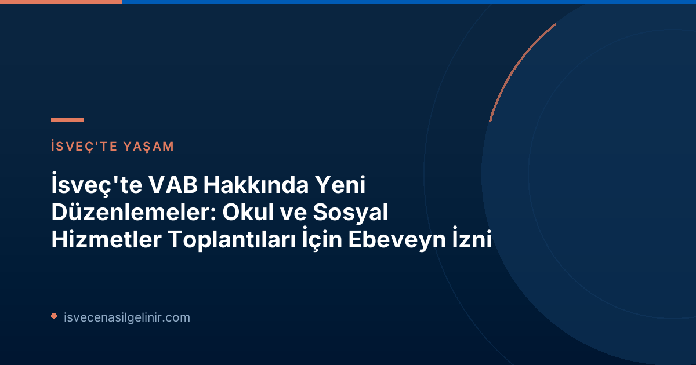

VAB Nedir ve İsveç'teki Önemi?
VAB, İsveç'te "Vård Av Barn" ifadesinin kısaltması olup, çocuğunuz hastalandığında veya bir yakınınız hasta olduğunda onun bakımı için işyerinizden alabileceğiniz geçici ebeveyn izni anlamına gelir. Försäkringskassan tarafından sağlanan bu destek, ebeveynlerin çocuklarının sağlığı ve refahı ile ilgilenirken maddi kayıp yaşamamalarını sağlar. İsveç'in güçlü sosyal güvenlik ağının bir parçası olan VAB, ailelerin hem iş hayatlarını sürdürmelerine hem de ebeveynlik sorumluluklarını yerine getirmelerine yardımcı olur.2026 Yılında Yürürlüğe Giren Yeni VAB Hakları Nelerdir?
1 Ocak 2026 tarihinden itibaren ebeveynlerin VAB alabileceği yeni durumlar, Försäkringskassan tarafından yapılan bir reformla genişletilmiştir. Bu üç yeni durum, ebeveynlerin çocuklarının özel ihtiyaçlarına veya durumlarına daha etkin bir şekilde destek olabilmelerini amaçlamaktadır:Yeni VAB İmkanları (1 Ocak 2026 İtibarıyla)
- Okul/Kreş Toplantıları: Ebeveynin çocuğunun hastalığı veya engelliliği nedeniyle anaokulunda veya okulda düzenlenen bir toplantıya katılması gerektiğinde.
- Sosyal Hizmetler Süreçleri: Ebeveynin sosyal hizmetler biriminde çocuğuyla ilgili bir soruşturmaya veya ön değerlendirmeye katılması gerektiğinde.
- Öz Bakım Eğitimi: Ebeveynin çocuğunun diyabet veya egzama gibi özel öz bakım ihtiyaçları hakkında anaokulu veya okul personeline eğitim vermesi gerektiğinde.
Yeni VAB Düzenlemeleri Nasıl Kullanıldı? İlk 6 Aylık İstatistikler
Försäkringskassan'ın reformun ilk yarısındaki takip raporu, yeni VAB imkanlarının nasıl değerlendirildiğine dair çarpıcı veriler sunuyor. 2026 yılının ilk altı ayında neredeyse 2.500 kişi bu yeni olanaklardan faydalandı.| Yeni VAB Durumu | Faydalanan Kişi Sayısı |
|---|---|
| Kreş veya Okul Toplantıları | 1.580 kişi |
| Sosyal Hizmetler Soruşturması/Ön Değerlendirme | 870 kişi |
| Öz Bakım Eğitimi (Personel için) | 120 kişi |
| Toplam Eşsiz Kişi Sayısı | Yaklaşık 2.500 kişi |
En Çok Kullanılan İzin Türü: Okul ve Kreş Toplantıları
İstatistikler açıkça gösteriyor ki, yeni VAB hakları arasında ebeveynlerin en çok başvurduğu durum, çocuklarının hastalıkları veya engellilik durumları nedeniyle okul veya kreş toplantılarına katılmak olmuştur. Bu durum, çocukların eğitim ve sağlık süreçlerinde ebeveyn katılımının ne kadar kritik olduğunu ve bu alandaki ihtiyacı gözler önüne sermektedir.VAB Süresi ve Yaş Gruplarına Göre Kullanım
Rapor, yeni VAB olanaklarının çoğunlukla günün bir kısmı için kullanıldığını ve en çok 11 yaşındaki çocuklar için izin alındığını belirtiyor. Bu veri, özellikle okul çağındaki çocukların ebeveynlerinin, kısa süreli ancak önemli okul veya sosyal hizmetlerle ilgili düzenlemelerde destek aradığını göstermektedir. İsveç'in sosyal hak sistemi ve vatandaşlık süreçleri hakkında detaylı bilgiye sverigemedborgarskapsprov.com adresinden ulaşabilirsiniz.İsveç'te Ebeveyn Hakları ve Sosyal Devlet Anlayışı
İsveç, aile dostu politikaları ve kapsamlı sosyal güvenlik sistemiyle tanınan bir ülkedir. VAB gibi düzenlemeler, devletin çocukların refahını ve ailelerin desteklenmesini ne kadar önemsediğinin bir göstergesidir. Bu tür haklar, ebeveynlerin çocuklarının özel ihtiyaçları etrafında daha esnek bir çalışma hayatı sürdürmelerine olanak tanırken, aynı zamanda çocukların kaliteli bir bakım ve eğitim almasını garanti altına alır. Bu reform, sosyal devletin dinamik yapısını ve değişen ihtiyaçlara adaptasyon yeteneğini bir kez daha kanıtlamıştır.VAB Başvurusu Nasıl Yapılır?
Yeni VAB haklarından faydalanmak isteyen ebeveynler, Försäkringskassan'ın resmi web sitesi üzerinden veya yetkili mercilere başvurarak işlemlerini gerçekleştirebilirler. Başvuru süreci genellikle çevrimiçi olarak kolayca tamamlanabilmektedir. Başvuru yapmadan önce, kendi durumunuza uygun koşulları ve gerekli belgeleri Försäkringskassan'ın web sitesinden kontrol etmeniz önemlidir. --- Referanslar: * Försäkringskassan Resmî Duyurusu: Ny möjlighet att vabba har nyttjats mest för möten i skolanİsveç'te VAB ve Diğer Sosyal Haklar Hakkında Daha Fazla Bilgi Edinin
İsveç'teki aile hakları, sosyal güvenlik sistemleri ve vatandaşlık süreçleri hakkında en güncel ve doğru bilgilere ulaşmak için sitemizi ziyaret edin.